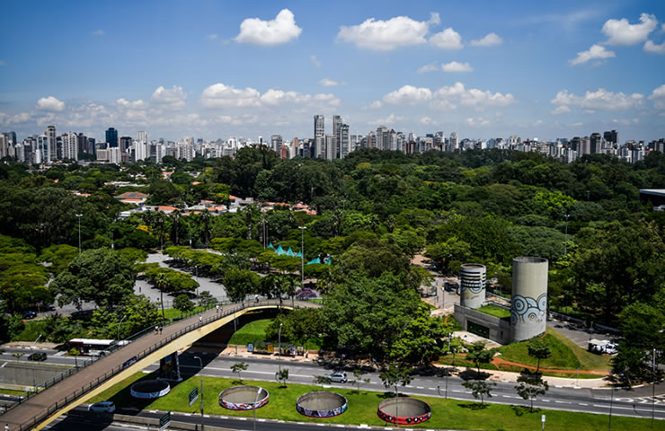

O Museu de Arte de São Paulo Assis Chateaubriand ou popularmente conhecido como MASP é uma das instituições culturais mais importantes do Brasil. Localizado no coração de São Paulo, é símbolo da capital paulista e referência arquitetônica.Fundado em 1947, o museu possui um acervo de 10 mil obras, porém nem todas já foram expostas no MASP, como uma armadura de cobre e aço de 1480. Para se ter uma noção do tamanho da importância do MASP para a arte mundial, o museu é uma das quatro instituições do mundo todo que possui uma coleção completa de Edgar Degas. Trata-se de 73 esculturas de bronze. O MASP ainda faz parte do Clube dos 19. Um grupo de 19 museus consagrados ao redor do mundo.

O Parque Ibirapuera é um dos mais famosos da capital paulista. Considerado o quintal dos paulistanos, encanta pela natureza e pela variedade de atrações gratuitas. O local é perfeito para andar de bicicleta, skate, correr ou fazer um piquenique. O visitante ainda têm opções de passeios,como o Museu de Arte Moderna, Museu Afro Brasil e a Fundação Bienal.

A Catedral da Sé é a igreja mais conhecida de São Paulo. Independente de religião a visita é imperdível.Com sua imponente construção marca também o centro da cidade, na Praça da Sé. A sua arquitetura é de brilhar os olhos! Cercada por vitrais, mosaicos e obras de arte sacra, possui capacidade para 8.000 pessoas, sendo considerada a maior da América do Sul.

Pateo do Collegio marca o ponto onde nasceu uma das maiores cidades do mundo, em 1554. Com apenas uma casinha de pau a pique, ali originou-se São Paulo. Atualmente, no local da antiga casinha está instalado um complexo formado pela Igreja São José de Anchieta, Museu Anchieta, Museu Arte Sacra dos Jesuítas, Biblioteca Padre Antônio Vieira e o Café do Pateo.O Pateo do Collegio também recebe diversos eventos culturais.

A Pinacoteca do Estado de São Paulo é uma verdadeira obra de arte. O prédio construído no final do século XIX tem os tijolos aparentes na sua arquitetura, o que lhe dá um charme a mais.Lá você encontra um acervo com mais de 9.000 obras de arte. Entre elas coleções de artistas brasileiros, como Benedito Calixto, Eliseu Visconti, Portinari e Anita Malfatti.Depois do passeio pela história do Brasil, você pode conhecer o prédio anexo da Pinacoteca, que conta com exposições temporárias.Os ingressos para a Pinacoteca do Estado custam R$6 a inteira e R$3 a meia. Aos sábados, a entrada é gratuita.